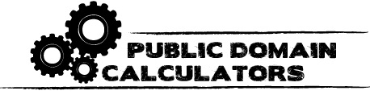
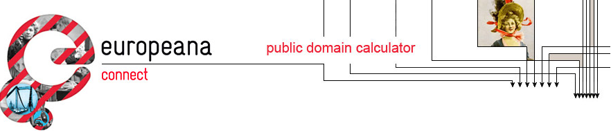

2014-04-18
公眾領域，是創作不可或缺的一塊領域，越來越多的人也意識到它的重要性，這是一個能夠帶來創意無限、想像無限的地方。而所謂的公眾領域，除了指本身即不受著作權法保護的部分外[1]，一般而言是指著作權保護期間屆滿之著作，該等已屆保護期間之作品即會成為公眾領域的一部分而成為大眾可以自由利用的公共財。然而，究竟要如辨識某一著作已屆保護期間或者仍受到著作權法之保護有其困難度，對於一般大眾而言，著作權法有其複雜性而不容易理解，從利用者角度而言，將可能無法清楚知道其欲使用之著作目前可利用範圍為何?此外，因為各國的著作權法規定皆不同，也會造成一個著作究竟是否成為公眾領域的一部分會因各國的著作權法規定不同而不同，必須依照各國法律個別認定之。
在當今的世界，科技日新月異，新的數位技術使的大眾相比從前能有接觸大量文化、歷史著作之機會，而這些作品當中有許多都已落入公眾領域中，於持續的數位化之下代表了大眾能夠有更多的機會接近公眾領域中的素材並為散布或再利用等等行為；但相對而言，亦有許多的作品仍受著作權法的保護，因為網路等之普及始得大家也有非常多的機會接觸這類著作，則清楚辨識哪些為有著作權之作品，哪些為可以自由利用的公眾領域素材即有其重要性，因其能幫助大眾瞭解使用的權限並能放心大膽的讓創意奔馳。然而，從前述可知，對於作品是否已經成為公眾領域時常難以明確界定，對於此一問題應該以何種方法或工具因應即值得思考。
而在國際上也有國際組織意識到此一情況並特別針對此一問題研發可能的協助工具。開放知識基金會(the Open Knowledge Foundation)以及Europeana Connect皆發展出「公眾領域計算器」(public domain calculators)此一工具用以協助大眾定位個別著作之地位。

圖片來源:OKFN之PD網站
就前者，亦即開放知識基金會所發展的「公眾領域計算器」(public domain calculators)而言。開放知識基金會於2006年時開始公眾領域方面之計畫，此時的目標在於辨識於英國中哪些錄音著作屬於公眾領域的一部分，而到了2007年時，公眾領域計畫的工作群和開放圖書館計畫一同工作，這時他們浮現發展一個創造辨別在各國法律之下各著作是否已經成為公共財地位之系統的理念。2008年時，開放知識基金會提出與法律專家一同合作，創造公眾領域辨別系統以因應歐洲各國不同的司法規定，這樣的討論之下也因此成立了 Public Domain Working Group來處理此一計畫的發展。而集結了大量的法律、科技專家，經過多年的努力後，開放知識基金會的「公眾領域計算器」(public domain calculators)之製作已經進行至一定程度的階段。其運作方式仰賴於將各國的著作權法製作成一種流程圖，而對於欲查詢的著作，它將會藉由比對內部的目錄元數據(bibliographic metadata)計算該著作在所指定的司法管轄領域內是否已成為公眾領域的一部分或者仍在該國著作權法之保護期限內。
圖片來源:Europeana Connect
而就後者，亦即Europeana Connect所發展出「公眾領域計算器」(public domain calculators)而言。Europeana Connect是一個由歐盟執委會資助成立的網站，而「公眾領域計算器」(public domain calculators)則是他們計畫中的一部分，此一工具的製作是由Knowledgeland以及Institute of Information Law (IViR)共同完成。Europeana Connect網站的「公眾領域計算器」(public domain calculators)和開放知識基金會所進行的「公眾領域計算器」(public domain calculators)都有相同的理念，同樣皆是有鑑於確定一著作進入公眾領域之時點的困難，大眾不易判斷哪些著作屬於公眾領域而因此發展出來的工具。在該網站中提供了三種計算工具: Button-Based Public Domain Calculation、Form-Based Public Domain Calculation、Automatic Public Domain Calculation，其中Button-Based Public Domain Calculation是最基礎的計算工具，而他們的運作方式首先為選擇一個司法管轄領域後，選擇欲詢問作品的類別，之後並回答相關問題後，該網站即會根據我們所給予的資訊提供計算結果，說明該著作於我們所選擇的司法領域規定下是否為公眾領域的一部分或是仍受該國著作權法之保護。
這樣的工具若能持續發展，對於協助大眾判斷公眾領域之作品會帶來很大的方便性。雖然對於其目前之運作成效為何，仍然有待觀察，但這樣的理念亦值得所有關心這一個議題的人追隨。值得一提者，目前法國文化部欲將這一工具引入該國國內，其和開放知識基金會法國(Open Knowledge Foundation France)合作此一工具於法國著作權法之下的運作模式，欲使「公眾領域計算器」(public domain calculators)成為文化部門的教學工具，用以教導文化部門之人員判斷一個著作的法律地位而能避免錯誤判斷之出現。目前，此一工具所涵蓋的司法領域限於歐洲國家，未來若有更多的國家響應，一個世界性計算器之產生或許即為指日可待之事。[2]
[1]如我國著作權法第九條之規定：下列各款不得為著作權之標的：
一、憲法、法律、命令或公文。二、中央或地方機關就前款著作作成之翻譯物或編輯物。三、標語及通用之符號、名詞、公式、數表、表格、簿冊或時曆。四、單純為傳達事實之新聞報導所作成之語文著作。五、依法令舉行之各類考試試題及其備用試題。前項第一款所稱公文，包括公務員於職務上草擬之文告、講稿、新聞稿及其他文書。
[2]參考資料：
1.Calculating the Public Domain , Posted on January 14, 2014 by Primavera De Filippi
2.http://publicdomain.okfn.org/calculators/about/
3.http://www.outofcopyright.eu/index.html